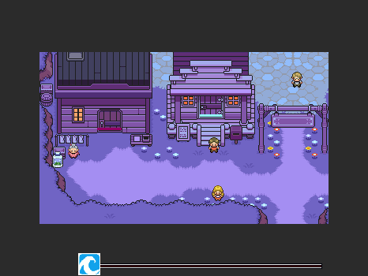
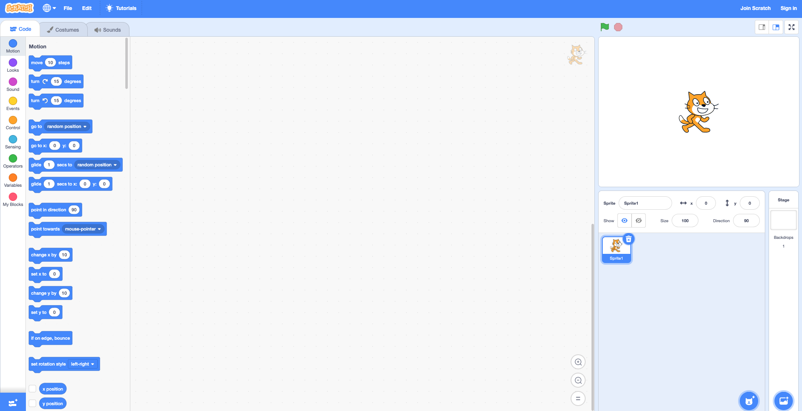

What is Scratch?
Before I begin analyzing Scratch. Here is what Scratch is:
With Scratch, you can program your own interactive stories, games, and animations — and share your creations with others in the online community. Scratch helps young people learn to think creatively, reason systematically, and work collaboratively — essential skills for life in the 21st century. Scratch is a project of the Lifelong Kindergarten Group at the MIT Media Lab. It is provided free of charge.
 Screenshot of Interactive Scratch
Screenshot of Interactive Scratch
In short, Scratch is an interactive platform that teaches people how to play by using blocks and animation. When I first enrolled into Rutgers, one of the first classes I took was Introduction to Computer Concepts. For many students, this was an 'easy A' class. It taught us basic computer concepts. For instance, it taught us how to use Gmail, Google Drive, and Scratch. In this class, we were introduced to Scratch. I remember the professor said, if you are interesting in becoming a computer science major, this is not the class for you. This class is for beginners. At the time, that was exactly what I was, a beginner.
Scratch was amazing to me because I hadn't formally coded before or created animations. I remember tinkering in HTML on Tumblr's early days or jailbreaking my iPhone 3. Even when I did these things, I didn't know the weight of programming or what it could really do. When I started using Scratch, that is exactly what it taught me. Scratch taught me to think like a computer. We often overlook our simple tasks of counting or using a method we always use because it comes easy to us but for computers, you have to spell it out. The skill of simpflying everyday life for computer language is a skill that is very valuable to me because it taught me how to explain things from a different perspective.
Before Scratch, I hadn't used any learning platform that resembled it so it was my first time. In class, we were handed hands-on resources like Scratch cards or manuals on how to put together your first game in Scratch. I wish I had those resources when I took Intro to Computer Concepts because they would have some in handy. In class this past week, I played several interactive Scratch games. One game that stood out to me was Wave Escape.
Wave Escape by user NotWadeWilson is an interactive game about escaping a tsunami. The objective of the game is to collect supplied and family members and escape. I wouldn't consider this game a serious game but there is some serious consideration to this game design. It reminded me of the first pokeman or Legend of Zelda games. The image below is of the gameplay. I think it was very well thought out and put together but I didn't learn anything from the game though. I wish there was more of a learning aspect. Something I could have learned are what items am I picking up and why? What is the importance of this product? What happens if I don't have access to the product, what could I take instead? What other alternative ways could I survive if I couldn't run away or didn't have access to a car? All these questions were running through my head and are critques or suggestions on how the game can improve to be a serious game.
Screenshot of Wave Escape GameplayAnalyzing Scratch as a Platform
I am analyzing scratch based off Raph Koster's, a multi-award winning game designer, virtual communities expert, writer and speaker, blog entry on how he analyzes games. I will list headers to describe the key points he suggests and go in-depth about scratch below it.
-
What are the systems?
- When you open up Scratch, there are blocks that indicate motion, looks, sound, events, controls, senses, operators, variables, and customizable options. However, what does this all mean? All these blocks are asking the user to make a choice. There is a blank screen in the middle, to assemble the blocks and a character in a box with a stop sign and green flag on top to indicate stop and go. What are the systems? They are the mechanics of the game. The blocks, the blank screen, the cat in the white box, "Sprite name, the direction and size. It is the whole screen.
-
What are the systems about?
- What is are the mechanics telling the player to do? Similar to legos, the blocks on the left side of the page are asking the user to build. Build something motion, or something that senes, just build. The white screen is inviting the user to use this space. This is your space. The components on the right side of the screen are saying, these are your results. See what you did. The systems are inviting creativity, inspiration, and intutition to build anything.
-
How do I touch the system, and how does it touch me?
- What are the inputs I can perform and the feedback I get back? In Scratch you are able to create a game or play a game. The inputs are building blocks, literally, to create a game. Scratch does not give you much direction once you start connecting blocks, there are no right answers. Scratch assumes you've read the documentation or watched the video on how to use the platform in order to use it. It is equally an important lesson to know that programming comes in more than one form so there can't be any wrong answers. The feedback you receive is either your code runs differently than expected or you recieve feedback underneath your published work.
-
What is the game experience?
- What is the visual storytelling? What are the graphics rendering? What about music and writing? Scratch, as you are creating a game, doesn't have much. It has a cool looking cat and colorful blocks. For a child, this is very appealing. When you put together a game like Wave Escape, it is very appealing. It looks amazing. It has all the color, the music, the appeal. The visual story telling of Scratch is what you make it. So, Scratch is a game that is up for interpretation.
-
What is the experience about?
- What is the intent? When you look at the intent of Scratch, to give users a platform to openly learn how to program by building games - the aesthetics mean nothing. Scratch is just a platform to create, share games, and build a community. The visuals don't have to be pretty but what you create makes Scratch beautiful.
-
Do these things all match up?
- Do the intents match? In Koster's post, he said the answer is normally no. However, I believe Scratch's intent matches with Scratch itself. If Scratch was meant to be a source code editor for kids - they did that. They really did. Scratch does exactly what they intend to do, they created something with that intent and it flourished into a community. I would say MIT did more than just create a kid-friendly source code editor, they built a community of young programmers.
-
What about fun?
- Did I personally enjoy this? If you are using Scratch for a course that isn't pertained to your major, you might not have enjoyed Scratch. If you are interested in computer science, you will enjoy this platform. If you are curious about programming or building games, you will enjoy this. If you wouldn't want to touch a computer ever again, this is not the platform for you. What I am trying to say is that Scratch is for everyone if everyone has an open mind!
Screenshot of Scratch Create Page
 Screenshot of Comments underneath Wave Escape
Screenshot of Comments underneath Wave Escape
Overall, I believe Scratch is a great way to segway into programming if you are just beginning. It may seem like a childs game at first but there are fundamental concepts that everyone must learn. Onto the next game! :)